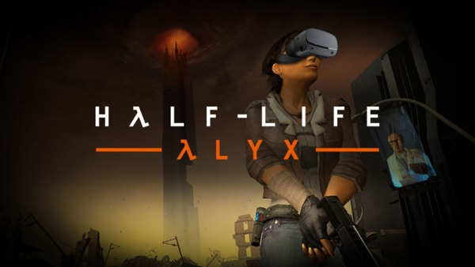
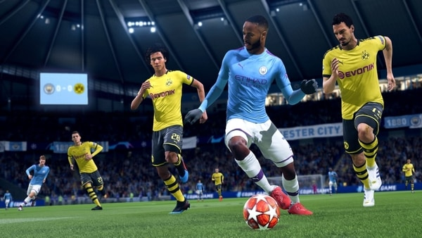

My Influences
In this section I'll be showcasing four website designs that inspire me
I have always liked the simplicity of the Netflix website, it is simple to use and understand and I believe that is key to a good website, it adapts to all sorts of screen sizes and it plays a preview of the movie/serie whenever you hover over it. Their website is simple but not simple to the point where it is boring and that is what I try to do whenever I design my own websites
Ever since virtual reality games became a thing, I have been fascinated by them. I alwasy think about the complexity of it because I believe making a game is already complex enough but by adding an element that puts the player in that situation I find that mindblowing, and I would like to look deeper into it to try and understand how it works further down the line
One of the games that I have played throughout my childhood was the nba 2k series. As a basketball fan I have been impressed by how each year the game just keeps on getting more and more realistic not only graphics wise but also gameplay wise. I think the team behind these type of games are a bunch of hard working talented people and things like this have inspired me to choose computer science as the field I study in for college
Another thing that inspires me is the Fifa game that just like the basketball game gets graphically more realistic each year while the gameplay also improves yearly. Games like this that realistically recreate sports fascinate me as I am a big sports fan. I wonder how the people behind games like this code these games and it motivates me to persevere to maybe one day be a part of a team that makes games like this